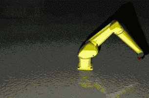
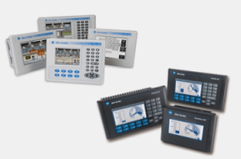
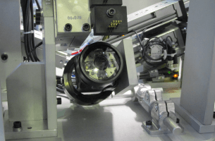

El carácter de prototipo de nuestros productos y las elevadas exigencias cualitativas de nuestros clientes suponen un enorme desafío.
Para realizar completamente cada encargo de principio a fin hemos creado en los terrenos de nuestra fábrica todas las secciones necesarias en el proceso de diseno y construcción de máquinas:

- Sección de Construcción Mecánica.
- Sección de Construcción Eléctrica y Programación.
- Sección de Producción de Piezas.
- Sección de Montaje.
- Sección de Planificación.
- Sección de Compras, Logística, Personal y otras secciones auxiliares.
En la Sección de Construcción Mecánica nuestro experimentado equipo de ingenieros disena las máquinas utilizando el software SolidWorks, BricsCad, Autocad, Autodesk Inventor.
La mayoría de las piezas disenadas la fabricamos nosotros mismos en nuestra Sección de Producción de Piezas. Esto nos permite seguir el avance de la ejecución al corriente, utilizando el programa propio de control de la producción - SSP2.br>
En la Sección de Construcción Eléctrica y Programación los proyectistas y programadores utilizan el software BricsCad y EPLAN Electric P8 para crear esquemas eléctricos..
Programamos:
PLC Siemens Simatic S5 y Simatic S7 en los lenguajes STL, LAD, FBD, SCL y Graph
 |
 |
 |
PLC Allen-Bradley MicroLogix y SLC500 en LAD
PLC Allen-Bradley CompactLogix y ControlLogix en los lenguajes Ladder, SFC, FBD y Structured Text
PLC Mitsubishi, GE-Fanuc / Fanuc, Omron i Schneider-Electric
Paneles HMI:
Siemens Simatic OP / TP, Multipaneles MP y KT
Allen-Bradley PanelView, Allen-Bradley PanelView Plus y PanelView Plus CE
Proface HMI
 |
 |
 |
Servomotores:
Siemens, Allen-Bradley, Bosch-Rexroth, Mitsubishi, Omron, Yaskawa, SEW, Lenze
Sistemas de visión:
Cognex, Keyence, Dalsa, Omron, DVT, National Instruments, Balluff
 |
 |
 |